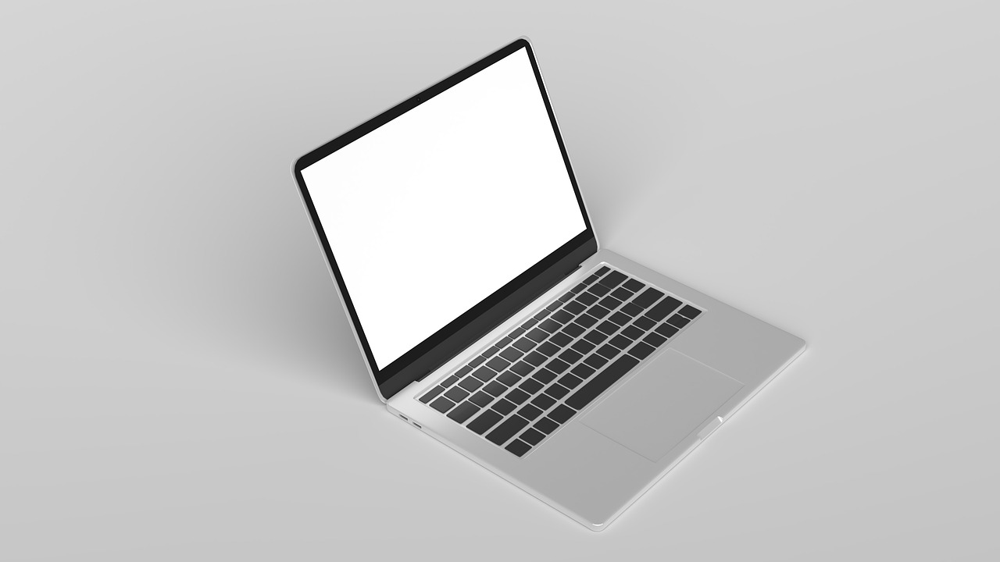

(Asus Zenbook, Foto af pixabay.com)
Her er vores top 5 studiecomputere til multimediedesigner uddannelsen
Som mulitmediedesigner skal du bruge en computer der kan håndtere på processer-tunge
opgaver og grafik-tunge opgaver. Derfor er det vigtigt, at du får købt en god og pålidelig computer. I
vores artikel Hvordan vælger jeg ny computer? kan du blive klogere på dit computerkøb, og vi vil her anvende den viden. På
denne side vil vi give dig en top 5 over de bedste bærbare computere, i alle prisklasser, til dig der
skal til at starte på multimediedesign uddannelsen, eller dig som bare står og mangler en computer til
studie / arbjede.
Vores liste er baseret delvist på Adobes anbefalede krav til Adobe CC6, og personlige erfaringer og
holdninger.
5. Dell XPS 15

(billede fra pixabay.com, ikke repræsenterende)
Pris: 17.499,-
12. gen i7, 16 GB RAM, 512 GB SSD, RTX 3050 Ti 15.6” 1920x1080 skærm
Vores anbefaling: ”Hvis du leder efter en kraftig computer med stilfyldt design, er Dell’s XPS 15 dit go-to. Trods dens milde look og design, er denne Dell XPS fyldt med kraftige komponenter, som kan køre krævende programmer uden problemer. Med den nyeste generation af intels i7 processorer, et dedikeret grafikkort; et 3050 Ti, og 16 GB RAM, er den ustoppelig. Vi har valgt at sætte den på 5. pladsen, eftersom prisen er en smule krydret på SU, og der går rygter om, at den ender med at thermal throttle.”
Pricerunner
4. Microsoft Surface Laptop Studio
(billede fra pixabay.com, ikke repræsenterende)
Pris: ~ 12.700,-
11. gen i5, 16 GB RAM, 256 GB SSD, 14.4” 2400x1600, Touchskærm
Vores anbefaling: ”Denne Microsoft Surface Studio computer er perfekt til den kreative. Med touchblyanten der medfølger, kan du gøre stor brug af touchskærmen på computeren, til at kreere lige hvad fantasien rækker til. Med en kraftig 11. generation i5 kombineret med 16 GB RAM, er den stærk nok til alle de programmer, som multimediedesign uddannelsen kaster efter den.”
Pricerunner
3. ASUS ZenBook OLED 13.3”

(billede fra pixabay.com, ikke repræsenterende)
Pris: 7.999,-
Ryzen 7 5700U, 16 GB RAM, 512 GB M.2 SSD, 13.3” 1920x1080 OLED skærm
Vores anbefaling: ”Denne ASUS er fra deres ZenBook kollektion, og er en kraftig computer i en stilfyldt men minimalistisk krop. Hvis du øsnker at have en kraftfuld computer med flot OLED skærm, er denne ZenBook lige noget for dig.” Pricerunner
2. ASUS TUF Gaming F15
(billede fra pixabay.com, ikke repræsenterende)
Pris: 7.999,-
12. Generation i7, 16 GB RAM, 512 GB SSD, RTX 3050 Ti, 15.6”
Vores anbefaling: ”Denne ASUS TUF computer, er egnet specielt til dig, som også gamer. Med en kraftig 12. generation i7 processor, og et dedikeret grafikkort, et RTX 3050 Ti for at være helt præcis, er den egnet til tunge spil. Den kører selvfølgelig også tunge programmer til uddannelsen, såsom Photoshop og Illustrator uden problemer.”
Pricerunner
1. Apple MacBook Air M2 (2022) 
(billede fra pixabay.com, ikke repræsenterende)
Pris: ~ 10.500,-
8-core M2 CPU, 8-core GPU 8 GB RAM, 256 GB SSD, 13.6”
Vores anbefaling: ”Denne fantastiske nye Macbook Air er super lækker i designet; den er tynd, let og kan fås i deres nye ”Midnight Black” farve. Man kan opgradere både RAM og lagerplads.” Pricerunner